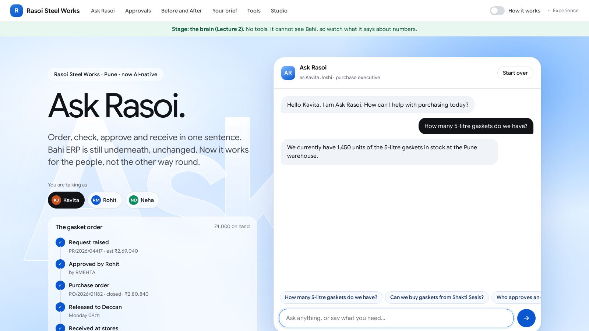
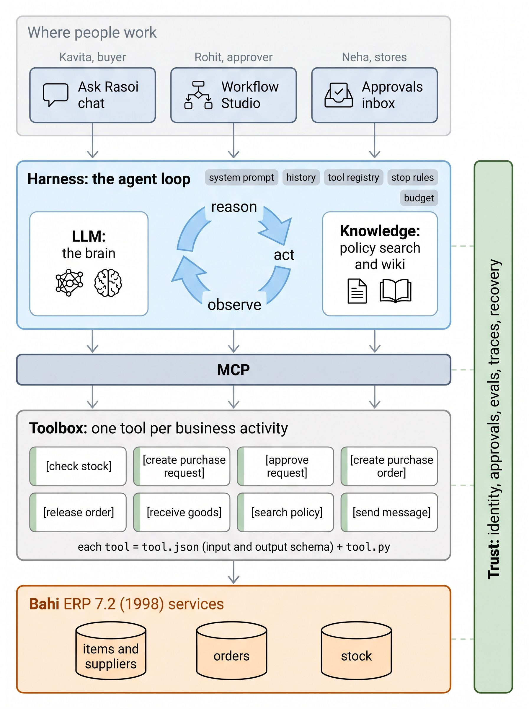

The Brain: How an LLM Works
Ask Rasoi gets its first piece: a large language model. Today we open it up, one token at a time, and find out why it talks so well, and why it makes things up.
Dr. Rajat Dandekar · Vizuara
Last time, this time
Lecture 1 showed you Rasoi's Before and After. Today we start building the After, one piece per lecture.
The whole thing, from outside
You played Bahi ERP 7.2 from 1998: check stock, raise the request, approve as Rohit, make and release the order, receive the goods. Then you did the same in one conversation with Ask Rasoi.The first piece: the model
Ask Rasoi with nothing but a large language model (LLM). No tools, no Rasoi data. We open it up: tokens, embeddings, attention, the transformer, training and sampling.Kavita asks the brain
She needs 20,000 gaskets before the Diwali run. First she checks stock.
The answer is quick, polite and sure of itself.
She asks where the number came from.
It names a source, just as smoothly.
Bahi says 54,000. The number and the source were both made up.
experiments/logs/cold_open_variants.json; the truth from the check_stock tool in cold_open.json.Was it bad luck?
A system prompt is the builder's instruction at the top of every chat. We tried two, on two models, 12 times each at temperature 1 (more randomness; Part 7 explains).
Modest prompt:
"You know Rasoi's stock" prompt:
Not one reply said 54,000. The modest prompt helps, but does not stop it.
experiments/logs/cold_open_variants.json.The question for today
How can a program write such fluent, confident sentences, and why did it make up 1,420?
- The game: predict the next word
- Tokens
- Embeddings
- Attention
- The transformer
- Training
- Generation and temperature
- The chat format
- Why it makes things up
The game
Everything an LLM does is one game, played again and again: guess the next piece of text.
One question, asked again and again
Give it some text. It answers one question: what comes next?
A token is a piece of text: a word, part of a word, a digit. Part 2 explains why.
Our open model, Qwen2.5-0.5B, guesses "pipes" (), "plates", "vessels". "cookers" comes fifth, at .
It has never heard of Rasoi. A steel works that makes pressure pipes sounds just as likely to it.
experiments/logs/next_token.json.Same game, other text
Switch the prompt. Read the top guesses.
"… before the Diwali": "season" (), "festival", a full stop. All plausible. None is a fact about Kavita.
"… buys its gaskets from": "a", "the", "China", "India". It has never heard of Deccan Polymers.
Plausible is not the same as true. Hold on to that; it is the whole of Part 9.
experiments/logs/next_token.json.Writing is the game, repeated
Pick a token. Add it to the text. Ask again.
Here we always pick the top guess. That is called greedy decoding.
Drag the slider: each step adds one token, and the guesses change because the text changed.
Ten steps give:
next_token.json (greedy_steps).What comes after "On hand in Pune stores:"?
We gave Qwen2.5-0.5B a stock report header, ending in a space, and asked for the next token.
Every digit gets some probability: "1" , "2" , "5" . It has never seen Bahi's stock table.
Sample ten times: 350 boxes, 200 units, 5 tonnes … None is 54,000.
Check yourself
Answer out loud before you click.
1. The model gives "pipes" . What do all the probabilities for the next token add up to?
Exactly 1 (100%), spread over all tokens in the vocabulary.
2. Why did ten samples give ten different stock figures?
Each sample picks a digit at random according to the probabilities. Many digits are plausible, so the picks differ. Nothing ties them to Bahi.
Tokens
The model does not read letters or words. It reads tokens, and the way text is cut into tokens decides cost, speed and what fits.
Why not words? Why not letters?
Letters: a tiny vocabulary, but every sentence becomes very long, and long is slow.
Words: short sentences, but the list of words never ends: GSK-SIL-05L, ₹2,80,840, Hindi, typos.
Tokens: in between. Common words are one token; rare text is cut into known pieces.
experiments/logs/tokens.json.Build a vocabulary by merging
Start with single characters. Count every neighbouring pair. Merge the most frequent pair into one new token. Repeat.
Drag the slider. Each merge adds one token to the vocabulary and makes the corpus shorter.
Real tokenizers do the same on huge text until the vocabulary has tokens (Qwen2.5) or (GPT-2).
How Rasoi's text is cut
Pick a sentence and a tokenizer.
Qwen2.5 writes every digit as its own token: 20,000 is six tokens, plus one for the space.
Qwen2.5 has the rupee sign, with its space, as one token. GPT-2 does not: it writes the rupee sign as three raw bytes.
Hindi costs far more tokens than the same sentence in English letters.
experiments/logs/tokens.json.You pay, wait and fit in tokens
Context: a model can read only so many tokens at once (Part 8).
Cost: providers charge per token in and per token out.
Speed: the reply is written one token at a time.
Kavita's question with the system prompt was tokens in Gemini's count, and the reply .
tokens.json (docs); Gemini counts from cold_open_variants.json.The model never sees text
The tokenizer turns text into a list of whole numbers, the token IDs. That list is all the model gets.
tokens.json.Check yourself
1. In the BPE example, why does "gas" become one token before "seal" does?
"g", "a", "s" sit next to each other in every gasket and gaskets, so those pairs are the most frequent. "seal" appears less often.
2. A Hindi purchase note costs more than the same note in English letters. Why, and why does it matter for Rasoi?
The vocabulary was built from text that is mostly English, so Devanagari is cut into small byte pieces. More tokens: more cost, slower replies, less room in the context.
Embeddings
Each token ID becomes a long list of numbers. Similar meanings end up pointing in similar directions.
Look up a row
The model keeps one big table. Row number = token ID. Each row is a vector.
In Qwen2.5-0.5B each row has numbers. The table alone is of its numbers.
experiments/logs/embeddings.json.Close in meaning, close in direction
Two vectors can point the same way or different ways.
Pick a word. The bars are its cosine with the other Rasoi words, coloured by group: parts, firms, documents, money, places, festivals.
Nobody told the model which words are parts or places. It learnt it from how words are used.
embeddings.json.The map
896 numbers do not fit on a screen. We squash them to two (a projection called PCA) and keep the groups' colours.
Click a word: dashed lines go to its three nearest neighbours.
Switch between the raw table rows and the vectors after a few blocks. A word's nearest neighbour is in its own group for of words in the raw table, and after block 8.
Nearest rows in the whole table
Search all rows of the table for the most similar directions.
"Pune" sits next to "Mumbai", "Maharashtra" and "Kolkata". "supplier" sits next to its own spellings and 供应商, the Chinese word for supplier.
This is what an embedding knows: how a word is used. Not how many gaskets Rasoi has.
embeddings.json (vocab_neighbours).Check yourself
1. "vendor" and "supplier" have similar vectors. Who decided that?
Nobody. Training nudged the vectors so the model predicts text well. Words used in the same places end up pointing the same way.
2. The word "run" in "Diwali run" and in "run the report" gets the same table row. Is that a problem?
Yes, the row cannot know which meaning is meant. The token has to look at its neighbours. That is attention, next.
Attention
How a token picks up meaning from the tokens before it. We do it by hand first, then read it off a real model.
Three vectors per token
Each token turns its embedding into three new vectors, using three learnt matrices.
Query: what am I looking for? ("gaskets" asks: how many?)
Key: what do I contain? ("20,000" answers: I am a quantity.)
Value: what do I pass on if you pick me?
experiments/logs/hand_attention.json.Five steps with a pencil
1. Score: multiply its query with each key, number by number, and add.
2. Divide by √2 (√ of the vector length) to keep scores tame.
3. Take e to the power of each score.
4. Divide by the sum: weights that add to 1. This is softmax.
5. Add up the values, each times its weight.
No peeking ahead
Do the same for every token at once: a table of scores, one row per token that looks.
A token may look only at itself and earlier tokens. Later cells are blocked.
Why: the model is trained to predict the next token. If it could see it, it would just copy it.
hand_attention.json.Now read it off a real model
Kavita's sentence through Qwen2.5-0.5B: blocks, heads each.
Layer , head : the last piece of "gaskets" puts of its weight on the digits of 20,000.
Layer , head simply looks one token back ( on average).
Across all heads, of the weight lands on the first token, a known habit of trained models (an "attention sink").
Fourteen heads, side by side
One attention calculation is one head. A block runs many heads at once, each with its own query, key and value matrices.
Each head learns a different way of looking. Drag the layer slider.
experiments/logs/attention.json.Check yourself
1. In the hand example, why is the first row of weights always [1, 0, 0, 0]?
"Kavita" is the first token. The mask lets it see only itself, so all its weight is on itself.
2. If all of a token's scores were equal, what would its new vector be?
Equal weights, so the plain average of the values it may see. (You will meet this in Assignment A2.)
The transformer
Attention is one part. A block adds an MLP, residual connections and normalisation, and the model stacks many blocks.
Inside one block
Norm: rescale each token's vector to a steady size, so numbers do not blow up.
Attention: tokens look at earlier tokens (Part 4).
Add: the result is added to what was there. This running total is the residual stream.
MLP: a small two-layer network applied to each token on its own: where much of what the model "knows" is stored.
Stack it: the output of one block is the input of the next, 24 times.
Position
Attention adds up values. Adding does not care about order.
So the model must be told where each token sits.
Two common ways: add a position vector, or rotate queries and keys by position.
Qwen2.5-0.5B
The small open model we have used all morning, read from its own configuration.
Ask Rasoi's brain, gemini-3.8-flash, is far larger. Google does not publish its size, so we do not guess it.
Every number here is a setting or a count from the model files: experiments/logs/model_card.json.
What does it think, block by block?
Take the vector of the last token, "Diwali", after each block, and read it out with the final layer as if the model stopped there.
Up to block 19 the best guess is junk, or 季, the Chinese word for "season". From block 20 on it is "season".
This trick is called the "logit lens". It is a view into the model, not how it is used.
experiments/logs/logit_lens.json.From a vector to probabilities
The last block's vector is multiplied by the unembedding: one score per token in the vocabulary.
Softmax turns scores into probabilities: e to the power of each score, divided by the sum. The same softmax as in attention.
The last column is the true probability over all tokens; it matches Fig. 3.
next_token.json.Check yourself
1. What does attention do that the MLP cannot?
Move information between tokens. The MLP works on each token on its own.
2. Why add the block's output to its input instead of replacing it?
The residual stream keeps what earlier blocks found, and each block only adds a correction. Deep stacks train much more easily.
3. Which part makes 151,936 scores?
The unembedding at the top: one score per token in the vocabulary.
Training
Where the numbers in all those tables come from: billions of tiny corrections, each one making the next token a little less surprising.
How surprised was it?
For each real next token, ask: what probability did the model give it?
Names and numbers surprise it. "run" costs bits, because it expected "season"; "elephant" costs .
A blind guess over the whole vocabulary would cost bits on every token.
experiments/logs/surprise.json.Downhill, a little at a time
Training makes the loss smaller. For every number in the model, work out which way to nudge it so the loss goes down.
Our tiny GPT, trained on Rasoi's text in the notebook: numbers, steps, on two CPU cores.
Validation = text it never trained on. If only the train loss fell, it would be memorising.
experiments/logs/tinygpt.json.Before and after training
Same prompt, same temperature (0.8), our tiny GPT before step 1 and after steps.

A base model continues text
Pretraining is exactly our tiny GPT, at enormous scale: predict the next token of public text.
The result does not answer questions. It continues documents.
Give it a stock report header and it writes a stock figure, as on the stock plate in Part 1.
next_token.json.A model that answers
Keep training, now on example conversations: a question, then a good answer.
Same small model, instruction-tuned, asked Kavita's question with the modest prompt. It answers like an assistant, and invents a figure.
experiments/logs/chat_template.json.A model people prefer
Show people two answers to the same question. They pick the better one. Train the model to give more answers like the winners.
This is where "I don't have access to live inventory data" comes from. People prefer an honest refusal to a made-up number.
What it knows was fixed on its last training day
After training, the numbers stop changing. Using the model never teaches it anything.
It saw public text: web pages, books, code. It never saw Bahi's tables.
So it cannot know today's stock, yesterday's GRN or Rohit's approvals, however well it talks.
What it does have
How purchase departments write. What a stock answer sounds like. That Pune is a city, gaskets are parts and GST is a tax. Enough to write a perfect-sounding wrong answer.What it does not have
Any row of any Rasoi table. Any way to look one up. Any memory of your last chat, unless you send it again (Part 8).Check yourself
1. Our tiny GPT started at a loss of . Where does that number come from?
A random model guesses roughly evenly over its characters: ln() = 4.41. A fresh random model is not perfectly even, so it is a little higher.
2. Which stage taught the model to reply instead of continuing a document?
Instruction tuning.
3. Kavita tells Ask Rasoi the stock is 54,000. Tomorrow, in a new chat, does it know?
No. The weights are frozen and a new chat starts empty.
Generation
The model gives probabilities. Something still has to pick a token. How we pick changes what Ask Rasoi says.
Two dials
Move the sliders on real logits. At T = 0.1 one token takes almost everything.
Why the same question gets different answers
Temperature 0 always gives the same text. Anything above 0 is a fresh draw each time.
Higher temperature: more variety, then nonsense.
This is why our 12 tries at the start gave 1,450, 2,450, 3,420 … from one question.
Check yourself
1. Ask Rasoi will raise purchase requests in Lecture 5. Which temperature would you use, and why?
Low (0 or close): we want the same, predictable answer every time, not variety.
2. Does temperature 0 stop the model inventing the stock figure?
No. It makes it invent the same figure every time (1,420 in our run). Temperature changes the pick, not what the model knows.
The chat format
A chat looks like messages. Inside, it is one long sequence of tokens that the model continues.
What you send
system: the builder's instructions. user: Kavita. assistant: the model's replies. Special tokens mark where each message starts and ends; the model writes what comes after the last one.
experiments/logs/chat_template.json.It only sees what you send
The model keeps no memory between calls. Every turn, the app sends the whole history again.
So every turn costs more tokens than the last. Qwen2.5-0.5B's window is tokens.
cold_open_variants.json; Qwen from chat_template.json.One answer, priced
The cold-open reply from gemini-3.8-flash, as measured, priced at the course's assumed list price (₹88 per US dollar).
Tokens
in · out
input is the prompt; output is the reply
Time
s
wall-clock for the whole call
Cost
₹
output tokens cost 6× input in our price table
Check yourself
1. Where did "Where did that number come from?" get its answer from, if the model has no memory?
From the context: the app re-sent the system prompt, the question and the earlier reply with the new question. It continued that text.
2. Could we fix the cold open by pasting Bahi's whole stock table into the system prompt?
For one table, yes: then the facts are in the context. That is the idea of Lecture 3. It does not scale to all of Bahi, which is why Lecture 4 adds tools.
Why it makes things up
Back to Monday morning, with everything we now know.
1,420, step by step
The question became tokens. The system prompt said "you know Rasoi's stock".
The model played its game: what text usually follows a stock question? "We currently have …", then a number.
Every digit was plausible. Nothing in it is connected to Bahi.
The follow-up was the same game: what usually follows "where did that come from?" A source.

Give it facts, give it hands
Lecture 3 · Knowledge: put the right facts into the context: the policy, the rules. "Can we buy from Shakti Seals?" gets §6.2.
Lecture 4 · Hands: let it look things up. It writes a request; our code runs it on Bahi; the result goes back into the context.
A tool call is not magic. It is the model writing a small JSON object instead of an answer.
cold_open.json (tool_preview, truth).Ask Rasoi, as it is today
Open the link on your phone or laptop. This is Ask Rasoi with the brain only: no tools, no Rasoi data.
1. Ask: "How many 5-litre silicone gaskets do we have in Pune stores?"
2. Ask again. Then ask where the number came from.
3. Ask something it does well: "Draft a polite reminder to Deccan Polymers about the Diwali delivery."
4. Post on the class wall: one thing it did well, one thing it made up.

NB2 · The Brain
Colab, free CPU. Parts (a)–(d) run a real model and train your own; part (e) replays our recorded Gemini calls.
(a) The game
Load Qwen2.5-0.5B. Next-token probabilities for Rasoi prompts, ten sampled stock figures, temperature by hand. Exercise 1: softmax.(b) Tokens
BPE by hand on a tiny gasket corpus, then real splits of Rasoi text. Exercise 2: write the merge.(c) Attention
The four-token example in numpy, then real attention weights. Exercises 3–4: one row by hand; find the head that reads 20,000.(d) A tiny GPT
About 80 lines of PyTorch, trained on Rasoi's 1,19,651 characters. Exercises 5–6: the step-0 loss; temperature.(e) A real chat model
gemini-3.8-flash throughbahi.llm, cassette L2v3_coldopen: the invented 1,420. Exercise 7: send the second turn.Your module
Load your capstone module's documents and start Assignment A2.A2 · The Brain, on your module
Due before Lecture 3, Sat 7 Nov. Details in A2.md.
Attention by hand
Three tokens from an approval note ("Rohit approves PR"), two numbers each. Weights and outputs for every token, checked in numpy.Train the tiny GPT
On your module's documents. Report the losses, the time and three samples; mark every number that looks right but is made up.Explain the gap
Three questions your users ask that need Bahi's live data. Two real bare-model replies. Why it answers that way, in your words.Ask Rasoi, with the brain lit
The LLM is the part that reads and writes language.
On its own it can talk, summarise and draft. It cannot know Rasoi.
Next it gets knowledge (L3), then hands (L4), then the loop that makes it an agent (L5).

The Memory
The model does not know Rasoi. Context is its only memory. We give it Rasoi's policies, find the right paragraph by meaning, and make it cite §6.2 when Kavita asks about Shakti Seals.